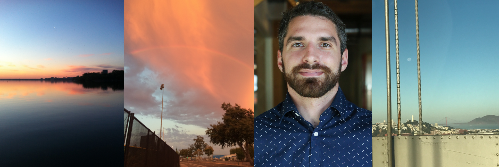

My professional work has centered on improving the delivery, efficiency, and transparency of social services. Along the way, I've built web applications, designed database schemas, and brought algorithms buried in research papers to life under open-source licenses.
I'm also an avid reader, adept crossword puzzle solver, and compulsive pun-maker. Cats and Earl Grey are my cups of tea. I sometimes find myself on an arcane Wikipedia page and I ask myself, "How did I get here?"